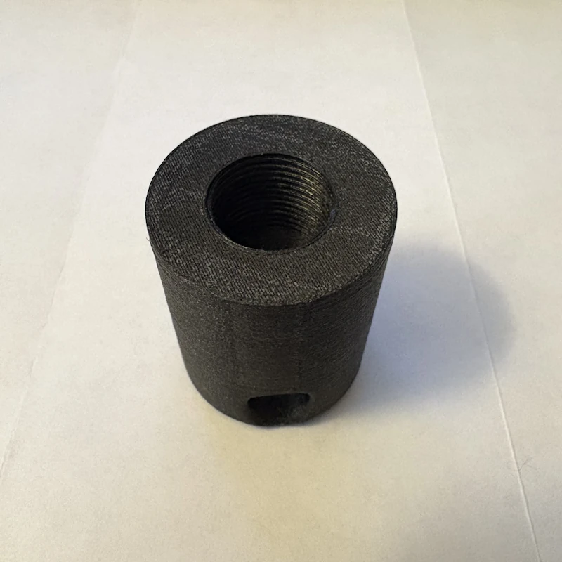

Let's have a look at high-level steps to get from a model to a 3D printed part. The steps necessary are roughly as follows.
FDM 3D printers are one of several methods for additive manufacturing, and print parts layer by layer, advancing in height with each layer. "Slicing" takes a model, and parameters specific to the printer and filament as input, and produces a set of instructions necessary for the printer to create the part layer-by-layer.
We'll use OrcaSlicer, an open-source slicer, and some profiles specific to my printer and the filament I'll be printing the part in. The part is an adapter between an M20 thread on a GNSS antenna to a 1/4-20 heatset insert for mounting on a tripod. Since I have profiles tuned to my printer and the black ASA-CF I'll be printing it in, it's as simple as opening the model in OrcaSlicer and hitting "Slice plate."
We'll be printing the sliced part on a Voron Trident as pictured to the left. This is an open-source printer design anybody can source components for and build.
Before we can start the print, the printer needs to be warmed up. We'll start by homing the printer in all three axes, move the bed to a Z-height of 100mm so bed heats the chamber fairly evenly and start heating the bed to 100°C. Ideally the printer is allowed to heat-soak for some time before printing to reduce thermal expansion and part warping during the print. I've found a good rule of thumb is that the printer is stable enough once the chamber reaches 38°C.
Once up to temperature the print can be started. We'll assume the filament is sufficiently dry and no purging is necessary. The printer runs through a series of steps as follows:
Total cost and time for this print are approximately:
| Total Filament: | 25.03 g |
|---|---|
| Filament Cost: | $1.16 |
| Print Time: | 1h 14m |
Once the print is complete, the heatset insert can be installed and we have a finished part.
